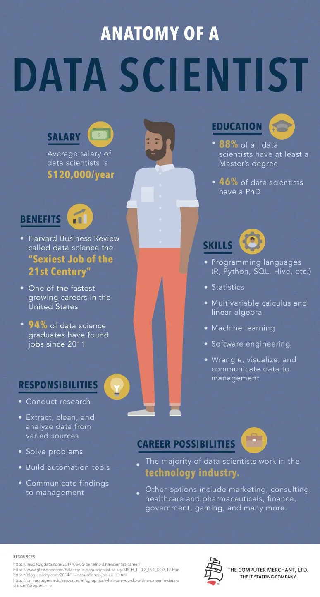

|  | Généralement rattaché à la direction des systèmes d'information (DSI) d’une entreprise, le Data Scientist a pour objectif d’analyser et d’exploiter toutes les datas des clients, des prospects ou bien encore des employés que l’entreprise récupère via différents canaux. L’objectif est de créer des modèles prédictifs et d’aider la prise de décision par la construction d'algorithmes. |